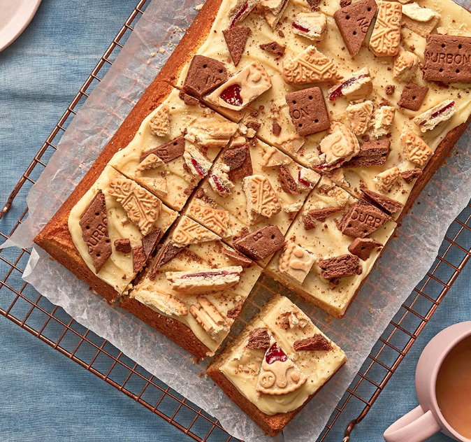

Homepage
Broken Biscuit Squares
Use up broken biscuits at the bottom of the tin to make this buttery cake.
It’s glazed with a sweet ganache and topped with some British biscuit favourites

Ingredients:
- 250g unsalted butter, softened, plus extra for the tin
- 100g caster sugar
- 150g light soft brown sugar
- 2 tsp vanilla extract
- 1 tsp almond extract
- 1 orange, zested
- 4 eggs
- 250g plain flour
- 2 tsp baking powder
- 2 tbsp milk
For the white chocolate ganache:
- 300g white chocolate, finely chopped
- 150ml double cream
For the broken biscuits:
- 30g jammy ring biscuits
- 30g chocolate sandwich biscuits
- 30g custard sandwich biscuits
Method:
- Heat the oven to 180C/160C fan/gas 5. Butter and line a 30 x 20cm tin.
Put the butter and sugars in a mixing bowl and beat using an electric whisk until light and fluffy.
Add the vanilla and almond extracts and orange zest. Mix to combine.
-
Add the eggs one by one. After each egg, make sure to whisk fast to avoid any splitting.
Add the flour and baking powder and whisk for 2 mins until you have smooth batter. Fold in the milk.
Spoon the mixture into the prepared tin and bake on the middle shelf for 25-30 mins until a skewer
inserted into the middle comes out clean. Leave the cake to cool in the tin for 10 mins,
then transfer to a cooling rack until cooled completely.
-
Meanwhile, make the ganache. Put the chopped white chocolate in a large heatproof bowl. Bring the cream to a boil in a small saucepan,
then immediately pour it over the chocolate. Leave for 1 min to melt. Whisk the cream and melted chocolate until you have a smooth,
ganache mixture. Set aside – it’ll thicken as it cools.
-
Spread the ganache on top of the cooled sponge in an even layer using a palette knife. Roughly break up the biscuits, then scatter them evenly over the cake. Cut into 12 squares.
More Recipes:
Toast Sandwich
Staffordshire Oatcakes